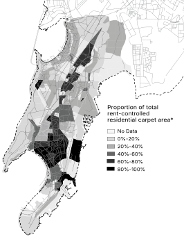

Rent Control's Unintended Consequences
The Bombay Rents, Hotel and Lodging House Rates Control Act, 1947 was one of the most controversial piece of legislation impacting the built form of the city. It was passed as a reform to protect the tenants from inflation and evictions after WWII and froze the rents of properties in the island city for next fifty years, only to be slightly amended in 1999.
Over time, the real rent paid to the landlord tends toward zero. As a consequence tenants never move out. While landlords still have the right to sell entire buildings under rent control, they seldom do it for an obvious lack of demand. Therefore, the older and the more decrepit a building is, the less likely it is to be sold, rebuilt or maintained. This lack of incentive and obstruction to private property market has led to a significant portion of housing stock unmaintained, deteriorated and underused on such valuable land with virtually no addition to the rental housing, especially for low-income group, for decades (S Patel, 2005).
Rent Act has become a sensitive and untouchable issue, backed by the large tenant lobby, a valuable vote bank that has stopped it from appropriate reforms. Reluctantly in 1999, the act was amended which has led to a gradual increase in private housing investment but mostly for high-value residential properties only.
Source * Map Source: UTandel, V., Patel, S., Gandhi, S., Pethe, A., & Agarwal, K. (2016). Decline of rental housing in India: the case of Mumbai
